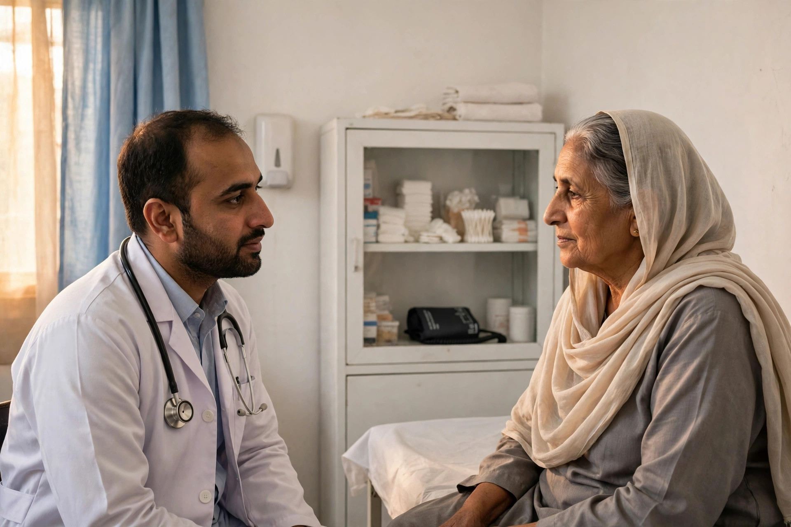

Health searches are different from shopping searches. A patient or a worried family member in Layyah is not browsing for fun; they need a clinic that is open, a laboratory that offers a specific test, or a pharmacy that stocks a medicine, and they need it now. The businesses that appear clearly and accurately in that search earn both the visit and the trust.
Health providers also carry a responsibility that other businesses do not. Information must be correct, claims must be honest and privacy must be respected. Good SEO for a clinic is mostly good, careful communication, done consistently.
How Patients Search in Layyah
Most patient searches are short and practical: the type of doctor or service, plus Layyah or near me. People then check three things quickly: how close the provider is, whether it appears to be open, and what other patients say in reviews. Many will tap the call button straight from the listing, so a working, answered phone number is essential.
Families also travel into Layyah from nearby villages for tests and consultations, often planning around bus timings and a relative advice. Clear location information, including the road and a recognisable landmark in your description, genuinely helps those patients reach you without stress.

Accuracy Is a Medical Duty Online Too
For a clinic, laboratory or pharmacy, an outdated listing is not a small mistake. If your profile shows old hours, a patient may arrive after you have closed. If the phone number is wrong, an urgent question goes unanswered. Review your Google Business Profile the way you would check a medicine shelf: regularly and carefully.
- Update hours for weekly off days, Ramadan and public holidays
- Keep the consultation or service phone number current
- Place the map pin at the actual entrance patients should use
- List services precisely, from tests offered to departments covered
This careful profile management sits at the centre of local SEO and Google Business Profile optimization, and it is one of the main things covered in our SEO services for Layyah.
Service Pages That Inform Without Overpromising
A simple website gives each main service its own page: what the service is, who it is for, how to book or visit, and what a patient should bring. A laboratory can list test categories; a pharmacy can explain prescription and delivery arrangements if it offers them; a clinic can describe its departments and doctor timings.
Write in plain language a patient understands, and avoid promising outcomes. Statements about qualifications, equipment and experience should be exactly true. Honest pages rank for the right searches and, more importantly, they set expectations a real visit can meet.

Reviews Handled With Care
Patients read reviews closely in health care, and they notice how a provider replies. Thank reviewers briefly, respond to criticism calmly, and never discuss anyone condition or treatment in public. A steady flow of genuine reviews, handled with dignity, tells new patients more about your practice than any advertisement. Our guide to Google reviews for Layyah businesses covers asking and replying in more depth.
Getting found on the map matters here too, because most patient journeys start there; the article on Google Maps for Layyah businesses explains pin placement and categories step by step.
Timings, Contact and Calm Information Win
In the end, health SEO in Layyah is simple to describe and demanding to maintain: correct hours, a reachable phone, precise services, honest pages and respectful review replies. Zaheer Seo Expert is based in Layyah, at Layyah - Rajan Shah Road, Rana Nagar, Chak 116 TDA, and helps local providers set up and maintain exactly this kind of presence, so patients find the right care without confusion.
What to Check Every Month
Health providers should give their online presence a short monthly check, the way they check stock and equipment. Confirm that the hours shown on Google still match the duty roster, that the phone number rings where patients expect, and that any doctor who has left or joined is reflected in the services list. Read the newest reviews for genuine operational complaints, such as waiting times or difficulty reaching the clinic, and treat them as free feedback rather than insults.
Also check the questions section of your listing, where people ask about test availability, appointment needs and facilities. Answer briefly and invite the person to call for personal matters, since medical details belong in a consultation, not in a public comment. A clinic that keeps this routine quietly builds a reputation for being organised and reachable, and patients choosing between two similar providers will pick the one that looks cared for, online and in person.
Frequently Asked Questions
What is the most important SEO step for a Layyah clinic?
An accurate Google Business Profile. Your clinic name, exact location, phone number and working hours must be correct, because patients often travel based on that information alone. Wrong hours or an old phone number can mean a patient arrives at a closed door.
Can a clinic or doctor advertise medical results online?
Health information must be handled carefully and honestly. Describe your services, qualifications and facilities truthfully, and never promise cures or guaranteed results. Clear, factual information builds more lasting trust than big claims.
Should a pharmacy or laboratory have its own website?
A simple website helps. It can list your services, test or product categories, timings and contact details in one stable place, and it supports your Google listing. Even a few clear pages are better than relying on social media posts that disappear.
How should a clinic respond to a negative review?
Reply calmly and briefly, thank the person for the feedback and invite them to contact the clinic directly so the matter can be understood. Never argue in public and never share any patient details in a reply.
Want More Customers From Google?
Call 0327 7350830 or email seozaheer14@gmail.com. Zaheer Seo Expert, Layyah - Rajan Shah Road, Rana Nagar, Chak 116 TDA, Pakistan. Open 24 hours.
Get Your SEO Strategy →